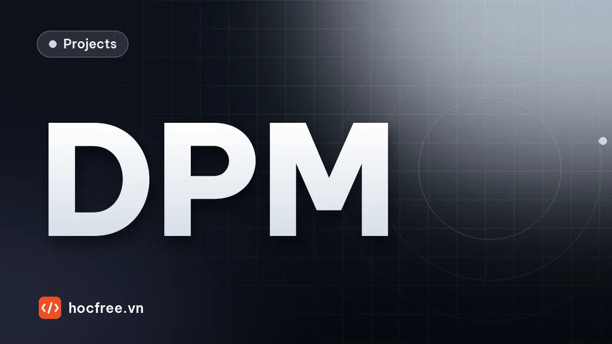

Dự án: đọc DataMatrix khắc chấm trên kim loại và cảnh báo mòn kim
Mã DPM khắc kim không đọc được bằng ảnh gốc: chiến lược bậc thang nối chấm, đo độ tương phản và cỡ chấm, cảnh báo thay kim trước khi mã hỏng hàng loạt.

Nội dung bài viết
Độ khó: ★★★☆ (khó) · Cần học trước: chặng 7: Measurement / Matching / OCR, chặng 6: Camera / Lens / Lighting · Thời lượng: khoảng 2,5 giờ
Mã DataMatrix khắc trực tiếp lên chi tiết kim loại (DPM: direct part marking) là xương sống của truy xuất nguồn gốc trong ô tô, hàng không, thiết bị y tế: một con số seri đi theo chi tiết suốt vòng đời. Khắc bằng kim (dot-peen) tạo ra các hố tròn rời nhau trên nền kim loại có vân mài và vết xước, khác xa mã in đen trên giấy trắng mà bộ đọc thông thường mong đợi. Hai việc khó nhất ở trạm đọc DPM: đọc được ổn định khi chấm nhỏ dần và nông dần theo độ mòn của kim khắc, và phát hiện kim mòn trước khi có chi tiết mang mã không đọc được, vì một chi tiết không đọc được mã thường là một chi tiết mất truy xuất.
Cài: pip install pylibdmtx pillow opencv-python numpy (bản Windows của pylibdmtx kèm sẵn libdmtx; Linux cần thêm gói libdmtx của hệ thống, xem bài đọc QR và DataMatrix).
1. Bài toán
"Máy khắc kim khắc số seri lên thân van thủy lực, trạm camera đọc lại ngay sau khi khắc. Gần đây cứ khoảng hai tuần lại có một đợt mã không đọc được hàng loạt; thay kim khắc là hết, nhưng lúc phát hiện thì đã có vài chục chi tiết phải khắc lại hoặc hủy. Khách hàng còn yêu cầu báo cáo chất lượng mã khắc theo từng lô."
| Đại lượng | Giá trị |
|---|---|
| Mã | DataMatrix 14 × 14 module, nội dung số seri 11 ký tự; bước chấm 0,5 mm |
| Ảnh | 20 pixel/mm, đèn đồng trục (hố chấm tối trên nền kim loại sáng); mã xoay bất kỳ, lệch vị trí |
| Mòn kim | đường kính chấm giảm từ khoảng 0,85 xuống dưới 0,5 bước module; độ sâu (tương phản) giảm theo |
| Yêu cầu | đọc ≥ 99,9% khi kim còn tốt; cảnh báo thay kim trước khi có mã không đọc được; thời gian đọc vừa chu kỳ máy |
2. Yêu cầu
- Đọc bằng thư viện thật (libdmtx qua pylibdmtx), chỉ thay đổi tiền xử lý ảnh.
- So nội dung đọc được với số seri vừa gửi xuống máy khắc (đọc được nhưng sai nội dung cũng là lỗi).
- Mỗi chi tiết ghi lại bậc đọc được và các chỉ số chất lượng để theo dõi xu hướng.
3. Kiến thức sử dụng
- Đọc QR và DataMatrix trên bao bì: cấu tạo mã, chiến lược đọc bậc thang.
- Capstone trạm đọc mã và OCR: chống trùng, đối chiếu lệnh sản xuất.
- Morphology: nối chấm thành module đặc.
- Chiếu sáng: đồng trục, góc thấp, dome cho bề mặt kim loại.
4. Dữ liệu: mã khắc chấm mô phỏng
Ma trận module được lấy từ chính bộ mã hóa libdmtx, nên ảnh mô phỏng là một mã DataMatrix hợp lệ. Mỗi module tối được khắc thành một hố tròn; đường kính hố (so với bước module) và độ tối của hố là hai thông số mòn kim. Nền có vân mài, vết xước, nhiễu; máy khắc đặt chấm lệch nhẹ.
import cv2
import numpy as np
from PIL import Image
from pylibdmtx.pylibdmtx import decode, encode
PX_MODULE = 10 # 10 pixel mỗi module (bước chấm 0,5 mm, ảnh 20 pixel/mm)
H = W = 320
def ma_tran_module(chuoi):
"""Ma trận module (1 = chấm) của mã DataMatrix cho chuỗi, lấy từ bộ mã hóa libdmtx."""
e = encode(chuoi.encode())
anh = np.array(Image.frombytes("RGB", (e.width, e.height), e.pixels).convert("L"))
toi = np.argwhere(anh < 128)
y0, x0 = toi.min(axis=0)
y1, x1 = toi.max(axis=0) + 1
n = (x1 - x0) // 5 # bộ mã hóa vẽ mỗi module 5 pixel
return (anh[y0:y1, x0:x1].reshape(n, 5, n, 5).mean(axis=(1, 3)) < 128).astype(np.uint8)
def khac_dpm(modules, rng, co_cham=0.8, tuong_phan=0.4, goc=None):
"""Ảnh mã khắc chấm (dot-peen) trên kim loại dưới đèn đồng trục: chấm là hố tối tròn, không chạm nhau.
co_cham: đường kính chấm / bước module (kim mòn thì giảm). tuong_phan: độ tối của hố so với nền."""
n = len(modules)
anh = 0.62 + 0.05 * cv2.GaussianBlur(rng.standard_normal((H, W)), (0, 0), sigmaX=12, sigmaY=0.7) # vân mài
for _ in range(6): # vết xước nhỏ ngẫu nhiên
p = rng.uniform(0, W, 4).astype(int)
cv2.line(anh, (p[0], p[1]), (p[2], p[3]), float(rng.uniform(0.5, 0.75)), 1, cv2.LINE_AA)
goc = rng.uniform(0, 360) if goc is None else goc
tam = np.array([W / 2, H / 2]) + rng.uniform(-30, 30, 2)
R = np.array([[np.cos(np.radians(goc)), -np.sin(np.radians(goc))], [np.sin(np.radians(goc)), np.cos(np.radians(goc))]])
lop = np.zeros((H, W), np.float32)
for (i, j) in np.argwhere(modules):
p = R @ ((np.array([j, i]) - (n - 1) / 2) * PX_MODULE) + tam + rng.normal(0, 0.6, 2) # máy khắc lệch nhẹ
cv2.circle(lop, (int(round(p[0] * 16)), int(round(p[1] * 16))), int(round(co_cham * PX_MODULE / 2 * 16)), 1.0,
-1, cv2.LINE_AA, shift=4)
anh = anh * (1 - tuong_phan * cv2.GaussianBlur(lop, (0, 0), 0.8))
return np.clip(anh + rng.normal(0, 0.02, (H, W)), 0, 1).astype(np.float32)
def doc(anh_xam_u8, timeout=300):
kq = decode(Image.fromarray(anh_xam_u8), timeout=timeout, max_count=1)
return kq[0].data.decode() if kq else None
rng = np.random.default_rng(0)
CHUOI = "SN2610A0001"
M = ma_tran_module(CHUOI)
print(f"mã {len(M)}×{len(M)} module, {M.sum()} chấm")
mau = np.hstack([khac_dpm(M, rng, co_cham=c, tuong_phan=t, goc=20) for c, t in ((0.85, 0.45), (0.65, 0.25))])
cv2.imwrite("dpm.png", np.uint8(255 * mau))
print("đọc ảnh nét, tương phản cao:", doc(np.uint8(255 * khac_dpm(M, rng, 0.85, 0.45))))mã 14×14 module, 102 chấm
đọc ảnh nét, tương phản cao: NoneFile dpm.png ghép một mã kim mới và một mã kim mòn. Bộ đọc không đọc được ảnh gốc, kể cả mã kim mới: libdmtx (cũng như phần lớn bộ đọc 2D) giả định module là ô vuông đặc liền nhau, còn ở đây là các chấm tròn rời rạc trên nền nhiều vân.
5. Chiến lược đọc bậc thang
Thử lần lượt các cách tiền xử lý, dừng ở bậc đầu tiên đọc được. Bậc then chốt là nối chấm: làm mờ nhẹ rồi erode ảnh (tức nở vùng tối) với phần tử tròn cỡ k pixel để các chấm phình ra lấp kín module, sau đó nhị phân Otsu.
def u8(a):
return np.uint8(255 * np.clip(a, 0, 1))
def bac_otsu(anh):
_, nhi_phan = cv2.threshold(cv2.GaussianBlur(u8(anh), (5, 5), 0), 0, 255, cv2.THRESH_BINARY + cv2.THRESH_OTSU)
return nhi_phan
def bac_noi_cham(anh, k=5):
"""Phóng to chấm tối cho các chấm liền thành module đặc (erode ảnh = dilate vùng tối), rồi Otsu."""
lam_day = cv2.erode(cv2.GaussianBlur(u8(anh), (5, 5), 0), cv2.getStructuringElement(cv2.MORPH_ELLIPSE, (k, k)))
_, nhi_phan = cv2.threshold(lam_day, 0, 255, cv2.THRESH_BINARY + cv2.THRESH_OTSU)
return nhi_phan
BAC_THANG = [("ảnh gốc", lambda a: u8(a)),
("làm mờ + Otsu", bac_otsu),
("nối chấm k=5", lambda a: bac_noi_cham(a, 5)),
("nối chấm k=7", lambda a: bac_noi_cham(a, 7)),
("nối chấm k=9", lambda a: bac_noi_cham(a, 9))]
def doc_bac_thang(anh):
"""Thử lần lượt từng bậc, dừng ở bậc đầu tiên đọc được. Trả về (chuỗi, bậc)."""
for ten, ham in BAC_THANG:
kq = doc(ham(anh))
if kq is not None:
return kq, ten
return None, None
for c, t in ((0.85, 0.45), (0.65, 0.25)):
a = khac_dpm(M, rng, c, t)
print(f"chấm {c}, tương phản {t}:", {ten: doc(ham(a)) for ten, ham in BAC_THANG})chấm 0.85, tương phản 0.45: {'ảnh gốc': None, 'làm mờ + Otsu': None, 'nối chấm k=5': 'SN2610A0001', 'nối chấm k=7': 'SN2610A0001', 'nối chấm k=9': None}
chấm 0.65, tương phản 0.25: {'ảnh gốc': None, 'làm mờ + Otsu': None, 'nối chấm k=5': None, 'nối chấm k=7': 'SN2610A0001', 'nối chấm k=9': 'SN2610A0001'}6. Tỉ lệ đọc theo cỡ chấm và tương phản
import time
rng_dg = np.random.default_rng(1)
print("chấm/module | tương phản | " + " | ".join(t for t, _ in BAC_THANG) + " | cả bậc thang")
t0 = time.perf_counter()
for c in (0.85, 0.65, 0.50):
for tp in (0.40, 0.20):
dem = np.zeros(len(BAC_THANG) + 1, int)
for _ in range(12):
a = khac_dpm(M, rng_dg, c, tp)
ok = [doc(ham(a)) == CHUOI for _, ham in BAC_THANG]
dem += np.array(ok + [any(ok)])
print(f"{c:11.2f} | {tp:10.2f} | " + " | ".join(f"{d:2d}/12" for d in dem))
print(f"({time.perf_counter() - t0:.0f} s)")chấm/module | tương phản | ảnh gốc | làm mờ + Otsu | nối chấm k=5 | nối chấm k=7 | nối chấm k=9 | cả bậc thang
0.85 | 0.40 | 0/12 | 1/12 | 12/12 | 12/12 | 0/12 | 12/12
0.85 | 0.20 | 0/12 | 0/12 | 11/12 | 12/12 | 1/12 | 12/12
0.65 | 0.40 | 0/12 | 0/12 | 5/12 | 12/12 | 12/12 | 12/12
0.65 | 0.20 | 0/12 | 0/12 | 4/12 | 8/12 | 12/12 | 12/12
0.50 | 0.40 | 0/12 | 0/12 | 0/12 | 6/12 | 12/12 | 12/12
0.50 | 0.20 | 0/12 | 0/12 | 0/12 | 8/12 | 12/12 | 12/12
(47 s)Ảnh gốc và nhị phân Otsu thông thường gần như không bao giờ đọc được. Cỡ chấm quyết định nhiều hơn độ tương phản: chấm còn 0,5 bước module thì nối với k = 5 không đủ lấp khe giữa các chấm, cần k = 9. Nhưng k = 9 lại làm hỏng mã kim mới: chấm to sẵn, nở thêm là lấn sang module sáng bên cạnh. Không có một mức nối nào dùng được suốt vòng đời kim khắc, nên bậc thang phải có nhiều mức, và bậc nào đọc được nói lên kim đang mòn tới đâu.
7. Đo chất lượng mã
Máy kiểm định mã DPM thương mại chấm điểm theo ISO/IEC 29158 (AIM DPM) với các thông số như độ tương phản ô (cell contrast), độ đồng đều ô (cell modulation), độ đều lưới, hư hại mẫu định vị, phần sửa lỗi chưa dùng. Dưới đây là phiên bản đơn giản hóa cho mục đích theo dõi tại trạm: tìm tâm từng chấm (cực tiểu cục bộ của ảnh đã làm mờ), dựng lưới 14 × 14 từ các tâm ngoài cùng, lấy mẫu giữa từng module trên ảnh gốc, rồi tính:
- CC = (trung bình ô sáng − trung bình ô tối) / trung bình ô sáng;
- cỡ chấm ước lượng từ diện tích tối quanh tâm chấm, chia bước module;
- số module sai so với mã chuẩn (giống "phần sửa lỗi đã phải dùng").
def do_chat_luong(anh, n=len(M)):
"""Đo chất lượng mã chấm: tìm tâm từng chấm, dựng lưới n × n từ các tâm ngoài cùng, lấy mẫu giữa module trên ảnh gốc.
Trả về độ tương phản ô (CC), cỡ chấm (đường kính / bước module), số module phân loại sai so với mã chuẩn."""
a8 = cv2.GaussianBlur(u8(anh), (3, 3), 0)
mo = cv2.GaussianBlur(a8.astype(np.float32), (0, 0), 2.0)
nguong_toi, toi = cv2.threshold(a8, 0, 255, cv2.THRESH_BINARY_INV + cv2.THRESH_OTSU)
cuc_tieu = (mo == cv2.erode(mo, np.ones((7, 7), np.uint8))) & (mo < nguong_toi) # đáy mỗi hố chấm
tam_cham = np.column_stack(np.nonzero(cuc_tieu))[:, ::-1].astype(np.float32)
trung_vi = np.median(tam_cham, axis=0)
tam_cham = tam_cham[np.linalg.norm(tam_cham - trung_vi, axis=1) < 0.8 * n * PX_MODULE] # bỏ điểm xa vùng mã
(cx, cy), (w, h), goc = cv2.minAreaRect(tam_cham)
buoc = (w + h) / 2 / (n - 1) # tâm chấm ngoài cùng cách nhau (n − 1) bước
R = np.array([[np.cos(np.radians(goc)), -np.sin(np.radians(goc))], [np.sin(np.radians(goc)), np.cos(np.radians(goc))]])
gia_tri = np.zeros((n, n))
for i in range(n):
for j in range(n):
x, y = np.round(R @ ((np.array([j, i]) - (n - 1) / 2) * buoc) + (cx, cy)).astype(int)
gia_tri[i, j] = a8[y - 1:y + 2, x - 1:x + 2].mean() # giữa module, 3 × 3 pixel
nguong, _ = cv2.threshold(np.uint8(gia_tri), 0, 255, cv2.THRESH_BINARY + cv2.THRESH_OTSU)
o_toi = gia_tri < nguong
cc = (gia_tri[~o_toi].mean() - gia_tri[o_toi].mean()) / gia_tri[~o_toi].mean()
sai = min(int(np.sum(np.rot90(m, r) != M)) for m in (o_toi, o_toi.T) for r in range(4))
r = int(buoc / 2)
dien_tich = [np.count_nonzero(toi[int(y) - r:int(y) + r + 1, int(x) - r:int(x) + r + 1]) for x, y in tam_cham]
co_cham = 2 * np.sqrt(np.median(dien_tich) / np.pi) / buoc # diện tích tối quanh tâm → đường kính
return {"cc": round(float(cc), 3), "co_cham": round(float(co_cham), 2), "module_sai": sai}
rng_q = np.random.default_rng(2)
for c, tp in ((0.85, 0.40), (0.65, 0.30), (0.50, 0.20)):
print(f"chấm thật {c}, tương phản thật {tp}:", do_chat_luong(khac_dpm(M, rng_q, c, tp)))chấm thật 0.85, tương phản thật 0.4: {'cc': 0.391, 'co_cham': 0.99, 'module_sai': 1}
chấm thật 0.65, tương phản thật 0.3: {'cc': 0.268, 'co_cham': 0.77, 'module_sai': 2}
chấm thật 0.5, tương phản thật 0.2: {'cc': 0.152, 'co_cham': 0.64, 'module_sai': 2}CC và cỡ chấm giảm dần theo độ mòn; số module sai nhỏ cho thấy lưới được dựng đúng. Cỡ chấm ước lượng lệch cao hơn giá trị thật một ít (do làm mờ và ngưỡng Otsu) nhưng thay đổi đúng chiều, đủ để theo dõi xu hướng. Đây không phải điểm chất lượng theo chuẩn: ngưỡng xếp hạng A đến F của ISO/IEC 29158 phải lấy từ văn bản chuẩn và kiểm bằng máy kiểm định đã hiệu chuẩn khi khách hàng yêu cầu báo cáo chính thức.
8. Cảnh báo thay kim trước khi mã hỏng
Mô phỏng 200 chi tiết khắc liên tiếp trong lúc kim mòn dần. Mốc là cỡ chấm trung bình của 20 chi tiết đầu sau khi thay kim; cảnh báo khi đường EWMA của cỡ chấm xuống dưới 80% mốc.
# Kim khắc mòn dần qua 200 chi tiết: chấm nhỏ dần, nông dần
rng_m = np.random.default_rng(3)
so = 200
bac_dung, chat_luong = [], []
for i in range(so):
c = 0.85 - 0.47 * i / (so - 1) + rng_m.normal(0, 0.02)
tp = 0.42 - 0.22 * i / (so - 1) + rng_m.normal(0, 0.02)
a = khac_dpm(M, rng_m, c, tp)
kq, bac = doc_bac_thang(a)
bac_dung.append([t for t, _ in BAC_THANG].index(bac) if kq == CHUOI else None)
chat_luong.append(do_chat_luong(a))
co = np.array([q["co_cham"] for q in chat_luong])
moc = co[:20].mean() # 20 chi tiết đầu sau khi thay kim: mốc
ewma, canh_bao = moc, None
for i, x in enumerate(co):
ewma = 0.2 * x + 0.8 * ewma
if canh_bao is None and ewma < 0.8 * moc: # cỡ chấm còn dưới 80% lúc mới thay kim
canh_bao = i
hong = next((i for i, b in enumerate(bac_dung) if b is None), None)
for i in (0, 50, 100, 150, 199):
print(f"chi tiết {i:3d}: {chat_luong[i]}, đọc được ở bậc: {BAC_THANG[bac_dung[i]][0] if bac_dung[i] is not None else 'KHÔNG ĐỌC ĐƯỢC'}")
print(f"cảnh báo thay kim (EWMA cỡ chấm < 80% mốc) ở chi tiết {canh_bao}; mã đầu tiên không đọc được: chi tiết {hong}; "
f"tổng số mã không đọc được: {sum(b is None for b in bac_dung)}")chi tiết 0: {'cc': 0.367, 'co_cham': 1.07, 'module_sai': 1}, đọc được ở bậc: nối chấm k=5
chi tiết 50: {'cc': 0.409, 'co_cham': 0.89, 'module_sai': 3}, đọc được ở bậc: nối chấm k=5
chi tiết 100: {'cc': 0.279, 'co_cham': 0.73, 'module_sai': 2}, đọc được ở bậc: nối chấm k=7
chi tiết 150: {'cc': 0.175, 'co_cham': 0.65, 'module_sai': 5}, đọc được ở bậc: nối chấm k=7
chi tiết 199: {'cc': 0.026, 'co_cham': 0.87, 'module_sai': 100}, đọc được ở bậc: nối chấm k=9
cảnh báo thay kim (EWMA cỡ chấm < 80% mốc) ở chi tiết 78; mã đầu tiên không đọc được: chi tiết 183; tổng số mã không đọc được: 3Cảnh báo bật khi mã vẫn còn đọc dễ dàng, sớm hơn mã không đọc được đầu tiên khoảng một trăm chi tiết. Đó là thời gian để lên kế hoạch thay kim vào lúc dừng máy, thay vì khắc lại hàng loạt. Chi tiết cuối cho thấy một giới hạn đáng lưu ý: khi mã quá mờ, phép đo chất lượng dựng lưới sai (CC gần 0, gần như mọi module "sai") trong khi bộ đọc với bậc nối lớn vẫn đọc được. Phép đo chất lượng thất bại cũng phải được coi là cảnh báo, không được bỏ qua như một giá trị lạ.
9. Bẫy thực tế
| Bẫy | Hậu quả | Cách tránh |
|---|---|---|
| Đèn vòng thẳng trên kim loại bóng | Chói, vân mài lấn chấm | Đồng trục cho bề mặt phẳng bóng; góc thấp cho chấm sâu trên bề mặt nhám; dome cho bề mặt cong |
| Chỉ ghi "đọc được / không đọc được" | Không thấy kim mòn tới khi hỏng hàng loạt | Ghi bậc đọc được, CC, cỡ chấm mỗi chi tiết; vẽ xu hướng |
| Một mức tiền xử lý cố định | Đúng khi kim mới hoặc khi kim mòn, không đúng cả hai | Bậc thang nhiều mức, sắp theo xác suất thành công |
| Bậc thang quá dài, thời gian chờ lớn | Thời gian đọc vượt chu kỳ máy | Bỏ bậc không bao giờ thành công, đặt timeout mỗi lần thử (bài tập 1) |
| Đọc được nhưng không đối chiếu nội dung | Máy khắc nhầm số, trạm vẫn báo OK | So với số seri đã gửi máy khắc, chống trùng trong lô |
| Báo cáo chất lượng "tự chế" cho khách hàng | Không được công nhận | Báo cáo chính thức bằng máy kiểm định theo ISO/IEC 29158; trạm chỉ theo dõi xu hướng |
10. Tự đánh giá
- Đọc được mã ở mọi mức mòn trong bảng thử bằng bậc thang; biết bậc nào cần cho mức mòn nào.
- Chỉ số chất lượng thay đổi đúng chiều với độ mòn; lưới dựng đúng.
- Cảnh báo thay kim sớm hơn nhiều so với mã hỏng đầu tiên; phép đo thất bại được coi là cảnh báo.
- Thời gian đọc trung bình và lớn nhất được đo, vừa chu kỳ máy.
Bài tập
Bài 1. Bậc thang nào nhanh nhất?
Mỗi lần thử đọc thất bại tốn tới hết thời gian chờ (300 ms). So ba thứ tự bậc thang trên 30 mã trộn mới và mòn: đủ 5 bậc, bỏ hai bậc không bao giờ đọc được, và đưa k = 7 lên đầu.
Xem đáp án
import time
def thoi_gian_doc(thu_tu, anh_thu):
"""Thời gian trung bình (ms) và tỉ lệ đọc được với một thứ tự bậc thang."""
tg, ok = [], 0
for a in anh_thu:
t0 = time.perf_counter()
for ten, ham in thu_tu:
if doc(ham(a)) == CHUOI:
ok += 1
break
tg.append(1000 * (time.perf_counter() - t0))
return np.mean(tg), np.max(tg), ok
rng_e1 = np.random.default_rng(5)
anh_thu = [khac_dpm(M, rng_e1, c, 0.3) for c in np.linspace(0.85, 0.5, 30)] # trộn mã mới và mã mòn
bac = dict(BAC_THANG)
for ten, thu_tu in (("đủ 5 bậc như trên", BAC_THANG),
("bỏ 2 bậc vô ích", [(t, bac[t]) for t in ("nối chấm k=5", "nối chấm k=7", "nối chấm k=9")]),
("k=7 trước", [(t, bac[t]) for t in ("nối chấm k=7", "nối chấm k=5", "nối chấm k=9")])):
tb, ln, ok = thoi_gian_doc(thu_tu, anh_thu)
print(f"{ten:18s}: đọc được {ok}/30, trung bình {tb:4.0f} ms, lâu nhất {ln:4.0f} ms")đủ 5 bậc như trên : đọc được 30/30, trung bình 475 ms, lâu nhất 903 ms
bỏ 2 bậc vô ích : đọc được 30/30, trung bình 133 ms, lâu nhất 609 ms
k=7 trước : đọc được 30/30, trung bình 56 ms, lâu nhất 612 msCả ba thứ tự đều đọc đủ, nhưng thời gian khác nhau nhiều lần: mỗi bậc thất bại trả giá bằng thời gian chờ. Hai bậc "ảnh gốc" và "Otsu" gần như không bao giờ thành công với mã chấm, bỏ đi là nhanh hơn hẳn. Đưa bậc thành công thường xuyên nhất lên đầu nhanh hơn nữa. Số ms cụ thể phụ thuộc máy; quy tắc thì không: sắp các bậc theo tỉ lệ thành công thống kê trên dữ liệu thật của trạm, và đo cả thời gian lớn nhất chứ không chỉ trung bình, vì chu kỳ máy bị giới hạn bởi trường hợp xấu nhất.
Bài 2. Dùng chính bậc đọc làm chỉ báo
Không cần đo chất lượng, chỉ cần biết mỗi mã đọc được ở bậc nào. Cảnh báo khi hơn nửa 20 mã gần nhất phải dùng bậc nối k = 7 trở lên. Cảnh báo này đến lúc nào so với cảnh báo theo cỡ chấm?
Xem đáp án
chi_so_k7 = [t for t, _ in BAC_THANG].index("nối chấm k=7")
canh_bao_bac = None
for i in range(20, so):
cua_so = bac_dung[i - 20:i]
if np.mean([b is None or b >= chi_so_k7 for b in cua_so]) > 0.5:
canh_bao_bac = i
break
print(f"cảnh báo theo bậc đọc (hơn nửa 20 mã gần nhất cần nối chấm k=7 trở lên): chi tiết {canh_bao_bac}")
print(f"so với: cảnh báo theo cỡ chấm ở chi tiết {canh_bao}, mã đầu tiên không đọc được ở chi tiết {hong}")cảnh báo theo bậc đọc (hơn nửa 20 mã gần nhất cần nối chấm k=7 trở lên): chi tiết 89
so với: cảnh báo theo cỡ chấm ở chi tiết 78, mã đầu tiên không đọc được ở chi tiết 183Chỉ báo theo bậc đọc đến muộn hơn chỉ báo theo cỡ chấm một chút nhưng vẫn sớm hơn mã hỏng rất xa, và gần như không tốn gì: thông tin có sẵn từ bộ đọc. Đây là ý tưởng chung của mọi trạm vision tốt: những gì thuật toán phải "cố gắng" thêm để ra kết quả (bậc tiền xử lý, độ tin cậy, số lần thử) là dữ liệu sớm nhất về sức khỏe của quá trình phía trước.
Nguồn tham khảo: ISO/IEC 29158 (Direct Part Mark quality guideline), ISO/IEC 16022 (DataMatrix); pylibdmtx (GitHub); libdmtx (GitHub); OpenCV: Morphological Transformations; NIST/SEMATECH e-Handbook: EWMA Control Charts.